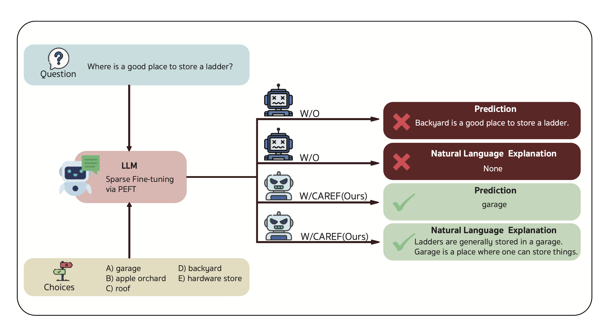
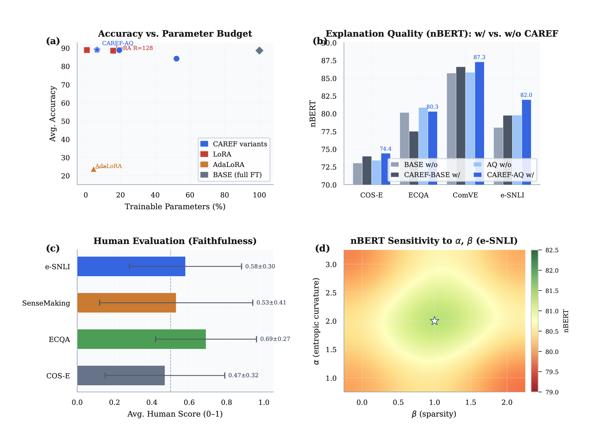
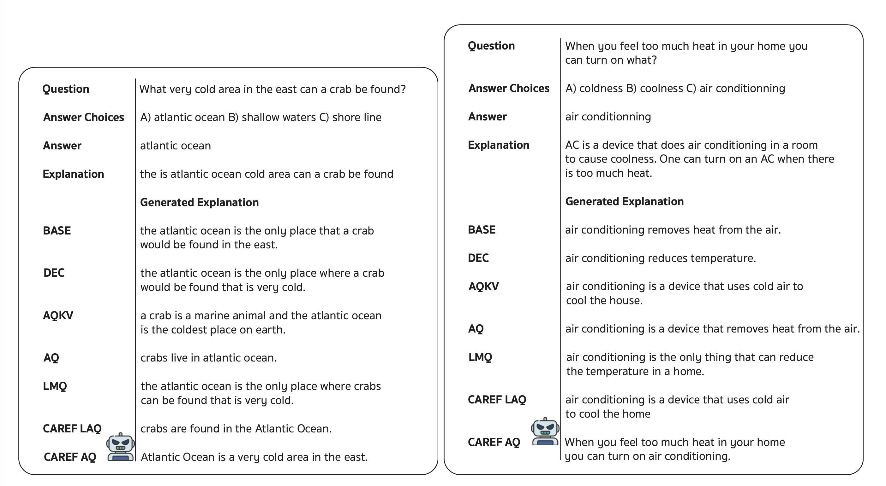

A parameter-efficient fine-tuning framework that jointly optimises predictive accuracy and explanation faithfulness via a single unified loss—the Sparsity-Calibrated Entropic Divergence (ℒSCED)—using only 6.43% of trainable parameters.
CAREF-AQ across COS-E, ECQA, ComVE, e-SNLI benchmarks.
Best explanation faithfulness score without rationale labels.
Beats LoRA & AdaLoRA at a fraction of the parameter budget.
Language models excel at NLU yet fail to produce faithful explanations—ones that causally reflect the model's decision process. Standard fine-tuning is agnostic to how a model allocates probability mass, leading to a structural gap between accuracy and explanation quality.

Figure 1. CAREF at a glance: (a) Accuracy vs. trainable parameter budget across variants; (b) nBERT explanation quality per dataset (w/ vs. w/o CAREF); (c) Human evaluation faithfulness scores; (d) Sensitivity of nBERT to α and β on e-SNLI.
CAREF couples entropy-based calibration with token-level sparsity control through one loss term— without any architectural changes.
Cross-entropy preserves task accuracy; KL term provides global calibration pressure; ℒSCED provides local, adaptive token-level regularization.
| Parameters | Recovered Behavior |
|---|---|
| α=1, β=0 | Standard per-token KL divergence from uniform; no sparsity weighting |
| α>1, β=0 | Power-law entropic penalty; large deviations incur super-linearly growing cost |
| α=1, β>0 | Sparsity-weighted KL; focuses pressure on low-probability tail vocabulary |
| α>1, β>0 | Full CAREF regime: adaptive sparsity + non-linear entropic curvature ✅ |
Evaluated on four NLE benchmarks (COS-E, ECQA, ComVE, e-SNLI) with Flan-T5 across 60 FEB splits. CAREF-AQ achieves the best average accuracy 89.04 and nBERT 81.00, outperforming LoRA and AdaLoRA.

Figure 2. Accuracy vs. parameter budget (left) and nBERT explanation quality per dataset (right). CAREF-AQ (star ★) dominates both axes simultaneously.
| Section | Model | M | COS-E | ECQA | ComVE | e-SNLI | Avg | Param% |
|---|---|---|---|---|---|---|---|---|
| Ablation (RQ1) | CAREF-BASE | A | 85.19 | 86.29 | 94.76 | 88.32 | 88.64 | 100% |
| E | 74.00 | 77.51 | 86.60 | 79.76 | 79.47 | |||
| CAREF-DEC | A | 81.56 | 85.76 | 94.73 | 74.73 | 84.19 | 52.23% | |
| E | 71.53 | 77.40 | 87.54 | 67.89 | 76.09 | |||
| CAREF-AQKV | A | 84.30 | 88.51 | 94.37 | 88.26 | 88.86 | 19.28% | |
| E | 73.43 | 79.29 | 86.73 | 81.80 | 80.31 | |||
| CAREF-LAQ | A | 84.73 | 88.93 | 94.23 | 88.07 | 88.99 | 6.44% | |
| E | 74.57 | 79.96 | 86.57 | 80.96 | 80.52 | |||
| CAREF-AQ ★ | A | 84.59 | 88.93 | 94.16 | 88.48 | 89.04 | 6.43% | |
| E | 74.42 | 80.31 | 87.29 | 81.97 | 81.00 | |||
| vs. PEFT (RQ3) | AdaLoRA 4.46% | A | 43.32 | 15.16 | 35.32 | 0.56 | 23.59 | 4.46% |
| E | 35.48 | 12.33 | 30.74 | 0.47 | 19.75 | |||
| LoRA R=128 | A | 84.58 | 91.77 | 94.57 | 83.37 | 88.57 | 15.74% | |
| E | 74.52 | 82.89 | 87.73 | 77.17 | 80.58 | |||
| CAREF-AQ ★ | A | 84.59 | 88.93 | 94.16 | 88.48 | 89.04 | 6.43% | |
| E | 74.42 | 80.31 | 87.29 | 81.97 | 81.00 |
M: metric — A = Accuracy, E = nBERT. Highlighted rows are CAREF variants. Results averaged over 60 splits.
CAREF-AQ consistently produces concise, causally grounded explanations across datasets. Baseline models generate verbose or semantically incoherent justifications.
CAREF fine-tunes only attention query projections (6.43% of parameters), encouraging sparse and calibrated attention patterns that concentrate on causally relevant input spans.

CAREF-AQ (bottom rows) produces concise, factually precise answers—e.g., correctly identifying "Atlantic Ocean" and "air conditioning" with tighter, more faithful explanations than BASE or DEC variants.
@inproceedings{panboonyuen2026caref, title = {CAREF: Calibration-Aware Regularization for Explanation Faithfulness Without Rationale Supervision}, author = {Panboonyuen, Teerapong}, booktitle = {Proceedings of EMNLP 2026}, note = {Under ACL Rolling Review (ARR) May 2026}, year = {2026}, url = {https://kaopanboonyuen.github.io/CAREF} }